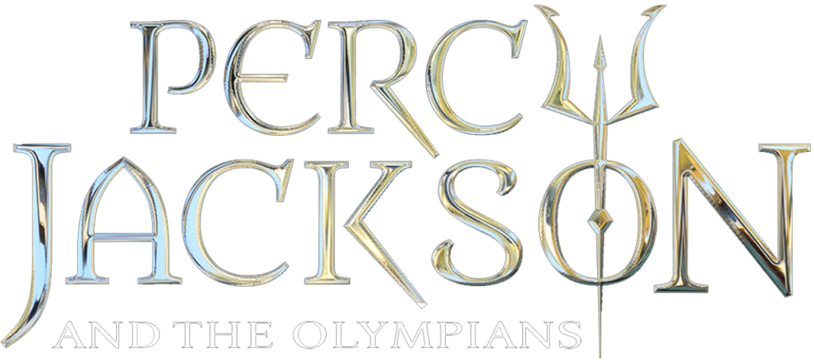

PELICULAS FAVORITAS
PERCY JACKSON: Es un semidiós griego hijo de Poseidón y la mortal Sally Jackson. Es el actual capitán de la Cabaña de Poseidón y ex-pretor de la Duodécima Legión en el Campamento Júpiter. Es interpretado por Logan Lerman en las adaptaciones cinematográficas de El ladrón del rayo y en El mar de los monstruos.
PERCY JACKSON TRILOGIA
- PERCY JACKSON Y EL LADRON DEL RAYO
En una oscura noche Inesperadamente el rayo de Zeus (Sean Bean) es robado y los truenos dejaron de sonar en las tormentas, el mismo se percata de eso y ahí le dice a su hermano Poseidon (Kevin Mckidd) de que su hijo podría ser el principal sospechoso de robarlo y que lo podría llevarlo al Tártaro si fuera cierto, ahí Poseidon lo amenaza si le pone un dedo encima y Zeus le advierte que si el rayo no es regresado antes del solsticio de verano, habrá una guerra entre el y Poseidon.

- PERCY JACKSON Y EL MAR DE LOS MONSTRUOS
Percy Jackson no se está sintiendo muy heroico últimamente. El hijo semidiós de Poseidón -Dios griego del mar- una vez salvó al mundo, pero ahora comienza a pensar que quizás eso fue un golpe de pura suerte. ¿Acaso es flor de un día... o vencedor de una sola misión?Cuando Percy se entera de que tiene un hermanastro que es un cíclope se pregunta si ser hijo de Poseidón es más una maldición que una fortuna. Sin embargo, no tiene mucho tiempo para lamentarse: las fronteras mágicas del Campamento Mestizo comienzan a desmoronarse y una horda de monstruos míticos amenaza con destruir el campamento de los hijos de los dioses. Estos son desafiados por un toro mecánico gigante que respira fuego enviado por Luke (también conocido como "el ladrón del rayo"), aterradoras criaturas marinas, un cíclope gigante y otros semidioses en conflicto con los dioses.

- PERCY JACKSON Y LA MALDICION DEL TITAN
Percy Jackson, Annabeth Chase y Thalia Grace van a Westover Hall, después de que Grover Underwood encuentra dos hermanos mestizos, llamados Nico y Bianca di Angelo. Apenas escapan un ataque de una mantícora llamada "Dr. Espino" con la ayuda de Artemisa y sus cazadoras, que incluyen a Zoë Belladona. A pesar de que sobreviven al ataque, Annabeth desaparece junto al Dr. Espino cuando éste muere y se disuelve, lo que pone a Percy muy angustiado. Artemisa sale en busca de una bestia muy poderosa, pero va sola y es capturada.


 Percy jackson
Percy Jackson y los dioses del Olimpo es una serie de libros de aventuras y fantasía escrita por Rick Riordan. La obra está ambientada en los Estados Unidos en la época actual pero está basada en un suceso destacado en la mitología griega. Consta de cinco libros, así como cinco spin-off
Percy jackson
Percy Jackson y los dioses del Olimpo es una serie de libros de aventuras y fantasía escrita por Rick Riordan. La obra está ambientada en los Estados Unidos en la época actual pero está basada en un suceso destacado en la mitología griega. Consta de cinco libros, así como cinco spin-off
PERCY ES EL PROTAGONISTA
Resumen
La historia se centra en Percy Jackson, es un adolescente que padece de THDA (trastorno de hiperactividad y déficit de atención) y dislexia, quien ha sido expulsado de seis escuelas, siendo la última de éstas la Academia YANCY. Durante una excursión escolar a un museo, su profesora de introducción al álgebra, la señorita Dodds, ataca a Percy, revelándole que ella es una de las tres furias. Mientras tanto, el padrastro de Percy, Gabe, vive con Sally, la madre del muchacho; sin embargo, ambos deben sufrir del abuso de Gabe, pues de acuerdo a la madre de Percy, él es quien «se ocupa de ellos» económicamente. Para alejarlo de Gabe, Sally se lleva consigo a Percy a un bungaló en Montauk, [Long Island] por un período de tres días. A la medianoche de su primer día de vacaciones, el mejor amigo de Percy, Grover Underwood, le dice al muchacho que él es en realidad un sátiro, y que las Furias lo están buscando para asesinarlo. Por ello, Sally conduce hasta el Campamento Mestizo, un lugar secreto en donde los semidioses tienden a entrenar, y dónde Percy puede estar a salvo. Durante el camino, ellos son atacados por el Minotauro, que logra secuestrar a la madre de Percy. Sin embargo, cuando localizan a Sally, ella se disuelve en una llovizna dorada, y Grover junto con Percy, logran escapar de la bestia y entran de inmediato al campamento. Una vez dentro, a Percy se le es asignada la cabaña de Hermes, cuyo líder es Luke Castellán. La cabaña de Hermes es en donde ponen a los todos semidioses cuyos padres son desconocidos. Clarisse, una de las hijas de Ares, le dice que a los de ingreso al campamento, debe sumergir su cabeza dentro de un inodoro sucio. Sin embargo, una vez que Percy llega al baño con Clarisse, el agua del inodoro responde ante Percy, por lo que Clarisse es rociada por dicho líquido. Durante el juego de capturar la bandera, Clarisse y sus compañeros de su cabaña atacan a Percy, hiriéndolo en el acto. Este último cae dentro de un pequeño arroyo próximo, y sus lesiones son curadas por el agua del mismo, después es atacado por un Perro del Infierno, pero es salvado por Quirón, además de que en ese instante, el tridente de Poseidón aparece encima de la cabeza de Percy, como señal de que él es hijo de dicho dios. Este hecho, hizo que Poseidón rompiera una promesa con sus hermanos Zeus y Hades, relacionada con la abstención de tener más hijos con mujeres mortales, puesto que dichos niños pueden llegar a ser demasiado poderosos, llegando incluso a convertirse en una potencial amenaza. Una vez que en el campamento se conoce el linaje de Percy, a este se le encomienda que encuentre el relámpago de Zeus, puesto que ha sido robado; Quirón, uno de los profesores del campamento, piensa que el responsable de dicha fechoría fue Hades. Zeus, sin embargo, cree que en realidad, fue Poseidón quien incitó a Percy robar el rayo.
Percy debe recuperar el rayo antes del solsticio de verano, por lo que sólo le quedan diez días para buscar dicho artefacto. Antes de que el joven partiera en su aventura, Luke le regala unas zapatillas voladoras. Además, Annabeth Chase, hija de Atenea, y Grover, le acompañan en su búsqueda. Los tres amigos se dirigen hacía el oeste, para entrar al Inframundo, cuya entrada se localiza en Los Ángeles, California. Durante su travesía, ellos se encuentran con varios monstruos griegos, como Medusa , las Furias e incluso el dios de la guerra, Ares, quien Percy odia al instante y le dice a Percy que su madre aún continúa con vida. Una vez en el reino de Hades, Percy debe enfrentarse al dios de la muerte, pues este le dice que él fue quien le robó su Yelmo de la Oscuridad, un objeto que le permite convertirse en una sombra. Después de ello, Percy descubre que el rayo se encontraba en su mochila, y huye del Inframundo, dejando atrás a su madre. En seguida, aparece Ares, quien fue el que puso el rayo dentro de la mochila, Percy se enfrenta al dios, al que logra derrotar apuñalándolo en el tobillo. Después, Ares le entrega el Yelmo a Percy, y este confiesa que fue el quien le ordenó a las Furias atacarlo. Inmediatamente de saber esto, Percy se dirige a la ciudad de Nueva York, para entregarle el relámpago a Zeus, en el piso 600 del Empire State Building, lugar donde se localiza el Olimpo.
Zeus acepta el rayo, y el joven regresa al campamento. Una vez en él, Luke le revela a Percy que fue él quien robó el rayo para Cronos, y a continuación, invoca a un escorpión venenoso para que pique a Percy, lo cual logra, dejándolo al borde de la muerte. Sin embargo, Quirón le cura, y Percy se retira del campamento para asistir a otra escuela. Entre tanto, Annabeth regresa con su padre biológico, el Profesor Chase, y Grover se marcha en busca del dios Pan. Percy se hace cargo de su hogar, y le obsequia a su madre la cabeza de Medusa, que esta utilizó para convertir a Gabe en una estatua. Sally vendió dicha estatua para conseguir dinero y comprar otro apartamento; al final se revela que la razón por la que Sally vivía con Gabe, era sólo para ocultar el aroma que emitía Percy por el hecho de ser un semidiós
 LINK PARA MAS INFORMACION
LINK PARA MAS INFORMACION